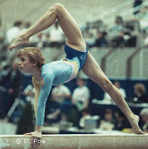

Hana Ricna (CSSR)
1983 World B Silver Medalist

Medal Total
- World Championships: 1
Silver, 1 Bronze
- European Championships: 1
Silver
Hana was born on December 20,
1968 in Brno. She trained at Zbrojorka Brno with coaches Radek and
Drahomira Kriz (Drahomira's maiden name was Smolikova, and she finished 9th AA
at the 1975 European Championships).
Hana came to the USA in 1994 and
coached for a while at a gym in Florida. She is married to Lorin Jessen
and they have a son, David, and a daughter, Sandra. David was a member of the men's gymnastics team at Stanford and represented the Czech Republic at the 2016 Rio Olympics. Sandra is a senior at Stanford and is a member of their women's gymnastics team. Both David and Sandra represented the Czech Republic at the 2019 world championships. Hana coaches at Parkettes in Allentown, PA.
-
- Competition Results
-
- 1980
Jr. Friendship Tournament (Druzhba): 3rd Team,
7th AA, 2nd UB, 5th FX, 6th V
Jr. GDR-CSSR Dual Meet: 1st Team, 3rd AA
Vitkovice Cup: 1st B, 2nd FX
1981
- Intl. Junior Championships (Tokyo): 7th
AA, 2nd UB, 5th FX
- Intl. Junior Championships (Sapporo):
2nd UB, 5th B
Jr. Friendship Tournament (Druzhba): 7th AA
-
- 1982
- Chunichi Cup: 3rd AA, 2nd B, 4th UB, 4th
FX
CSSR Championships: 1st AA, 1st UB, 1st B
Jr. European Championships: 9th AA, 5th FX, 8th UB
Jr. Friendship Tournament (Druzhba): 5th Team, 5th UB
- Jr. GDR-TCH Dual Meet: 1st AA
- Moscow News: 4th AA, 5th FX, 7th V
- TCH-ITA Dual Meet: 1st Team, 1st AA
Tokyo Cup: 5th UB
-
- 1983
-
CSSR Championships: 1st UB, 1st FX, 2nd B
-
European Championships: 13th AA, 6th FX, 8th UB
- Riga International: 7th AA, 1st UB
- TCH Championships: 1st AA
- World Championships: 6th Team, 14th AA, 2nd B,
8th UB
-
- 1984
- American Cup: 8th AA, 1st B
- Chunichi Cup: 5th AA, 1st UB, 1st B
- CSSR Championships: 1st AA, 1st FX, 2nd UB, 2nd BB
CSSR-ROM Dual Meet: 2nd Team, 3rd AA
CSSR Spartakiade (Olomouc): 2nd AA, 2nd B, 4th FX, 8th
UB
- Kosice International: 2nd AA, 2nd V, 2nd
UB, 2nd B
Ostrava International: 1st FX
- Tokyo Cup: 1st UB, 5th B
-
- 1985
- Champions All: 2nd AA
Chunichi Cup: 1st AA, 1st UB, 2nd B, 2nd FX
- European Championships: 4th AA, 2nd B,
4th UB, 4th FX
- French International: 1st UB, 1st B, 2nd FX
- Tokyo Cup: 1st UB, 2nd B
- World Championships: 5th Team, 8th AA, 3rd UB,
5th B
-
- 1986
- Ahoy Cup: 13th AA
Kosice International: 1st AA, 1st UB, 2nd B, 3rd V
- TCH-GDR "B"-HUN: 1st AA
- World Cup: 5th AA, 4th UB, 5th B, 5th FX
-
- 1988
- Olympic Games: 7th Team, 29th AA
-
This page was created on November 15, 1997 and was last
updated on November 5, 2024.
© Gymn Forum